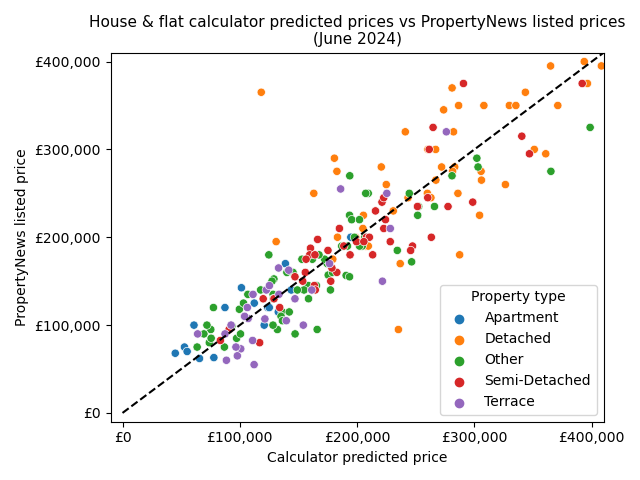

Data and modelling
Property data, including 2005 valuations, are from Land & Property Services. These values are updated to today using NISRA's Northern Ireland House Price Index, using separate factors for houses and flats/apartments, but only at the granularity of local government district (LGD) level. Price levels and the overall structure of the map represent today's market. However, small-scale patterns are based on 2005 data and may have changed slightly since then, where some areas have become more or less desirable within a district.
Values for each postcode come from a simple statistical model of price per square metre dependent on property type, floor area, presence of garden or garage, and postcode, trained on the LPS data. A value is only calculated for postcodes with at least 10 properties in the LPS data, and a small spatial smoothing is applied, to reduce noise and give more weight to postcodes with more data.
These postcode coefficients are what is shown in the map: they capture the value of the area itself, independent of the particular kinds of properties (size, etc.) that are found in the area.
Slightly simpler models, one each for houses and flats, are used for the Affordability Calculator. These models do not explicitly handle new builds, so a scaling of factor of 1.4 is applied to predicted prices in these cases. This captures quite well the premium that new build listings carry compared to resale properties; e.g., see here. When a short postcode is used in the calculator, the 70th percentile of the predictions for that short postcode is used, because often new builds are part of a new long postcode that becomes more desirable than the average for that short postcode.
The processing and modelling code is available on GitHub.
Validation
The primary purpose of the Price Map is to show the value of areas relative to each other, but for the Affordability Calculator to be useful, the price model must be accurately calibrated for recent asking prices. A sample of sales listings was obtained from PropertyNews in June 2024 and used to evaluate the calculator model's predictions. Floor area and presence of garden and garage were obtained by linking the properties to the LPS data, so these values may be outdated in some cases.

The plot above shows predicted prices for the sample of properties against their actual listed price. Predictions are evenly spread across the 1:1 line, indicating that predicted prices are well-calibrated (not consistently too high or too low). The mean absolute error for this sample is £32,000, and the mean absolute percentage error is 17%, which indicates the accuracy of the calculator: for each calculator prediction, an actual property in the postcode could be considerably more or less expensive, depending on details particular to that property - number of bedrooms, quality of fittings, and so on - that are not considered by the calculator.
The aim here is not to create the most accurate price model possible. The affordability calculator only indicates the price of a typical property of a given size in each postcode. The plot above does show, however, that the price model performs reasonably well at separating postcodes by property value, and is well calibrated for current prices.